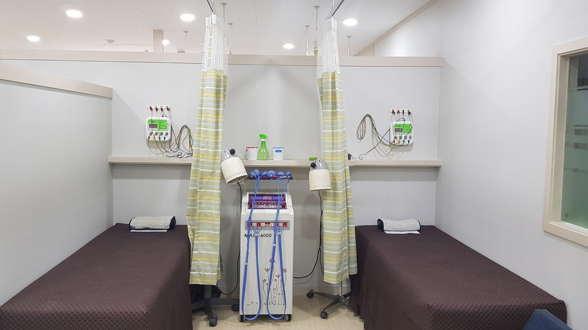

01 · MANUAL CARE
추나요법 상담
근골격계의 움직임과 불편한 부위를 확인한 후 추나요법의 필요성과 시행 가능 여부를 상담합니다.
30년 임상 경력 고의현 대표원장 직접 진료 사고 후 목·허리 통증이나 근육의 뻐근함이 이어진다면 현재 상태를 먼저 확인해 보세요. 우성한의원에서 진료 상담과 자동차보험 접수 절차를 안내해 드립니다.
사고 직후에는 통증이 뚜렷하지 않다가 시간이 지나 불편함을 느끼는 경우도 있습니다. 증상이 지속되거나 심해진다면 의료진의 진찰을 받아보세요.
목과 어깨의 뻐근함, 허리 통증, 근육의 긴장, 두통이나 어지럼 등은 사고 후 나타날 수 있는 증상입니다. 증상의 원인은 다양하므로 사고 경위와 현재 상태, 필요한 검사를 종합해 판단해야 합니다.
한의학적 관점의 진료도 함께 상담하세요.
우성한의원은 문진과 진찰을 통해 불편한 부위와 증상 변화를 확인하고, 환자 상태에 맞는 한방 진료 방법을 상담합니다.
치료 방법은 진찰 결과와 개인별 상태에 따라 선택하며, 모든 치료가 모든 환자에게 필요한 것은 아닙니다.
근골격계의 움직임과 불편한 부위를 확인한 후 추나요법의 필요성과 시행 가능 여부를 상담합니다.

현재 증상과 건강 상태, 복용 중인 약 등을 확인하고 한약 처방의 적절성과 주의사항을 상담합니다.

통증 부위와 개인별 상태를 살펴 침 또는 약침 치료의 적합성, 예상되는 주의사항을 설명합니다.

근육 긴장과 불편한 부위를 확인하고 침·부항 및 한방 물리치료 등의 적용 여부를 상담합니다.
※ 치료의 종류와 횟수는 의료진의 판단에 따라 달라지며, 치료 효과와 반응에는 개인차가 있을 수 있습니다. 약침·봉침 등은 알레르기 반응을 포함한 부작용 가능성에 대해 사전 상담이 필요합니다.
방문 전 보험사에 대인 접수 여부와 사고 접수번호를 확인해 주시면 접수 안내가 수월합니다.
자동차보험 대인 접수 여부와 보험사, 사고 접수번호를 확인합니다.
내원 또는 전화 상담 시 보험사명과 사고 접수번호를 알려주세요.
의료기관에서 보험사에 진료 가능 여부와 지불보증 관련 사항을 확인합니다.
증상과 진찰 결과에 따라 필요한 진료 및 비용 안내를 받습니다.
사고 발생일과 상해등급에 따라 적용 여부가 달라집니다. 본인의 사고가 대상인지 보험사에 먼저 확인하세요.
자동차손해배상진흥원 안내에 따르면, 해당 시행일 이후 사고 중 상해등급 12~14급 경상환자(주로 염좌·타박 등)가 8주를 초과해 치료받으려는 경우 치료 필요성 검토 절차가 적용됩니다. 임산부와 만 7세 이하 영유아는 이 검토 대상에서 제외됩니다.
※ 위 내용은 2026년 9월 10일 이후 발생한 사고에 관한 일반 안내입니다. 사고일, 상해등급, 손상 유형 및 적용 예외에 따라 달라질 수 있습니다. 제출 서류와 일정은 보험사 및 자동차손해배상진흥원의 최신 안내를 확인하시기 바랍니다.
개별 보험 적용과 진료 가능 여부는 보험사 확인 및 의료진의 진찰이 필요합니다.